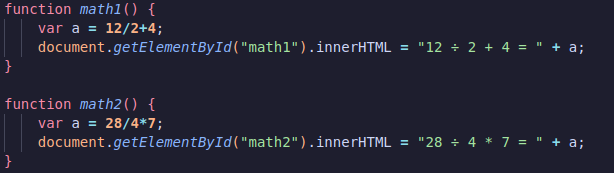
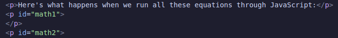

Question 10 (Test C)
Yuri wants to improve the efficiency and scalability of his JavaScript program by defining his own processes or functions. Why are functions such an integral part of writing JavaScript code?
- Because they transfer program execution to subroutines, procedures, or other function
- Because they perform specific tasks repeatedly throughout your program, as needed
- Because they generate events
- Because they process user-generated events
The answer is "Because they perform specific task repeatedly throughout your program, as needed." The reason this improves the efficiency and scalability of their JS program is that it allows for them to only write tasks once rather than bloating the program with the same code over and over
Here's an example of using functions from a different question I did:
 